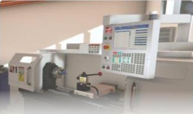
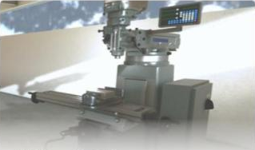
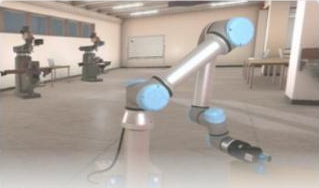
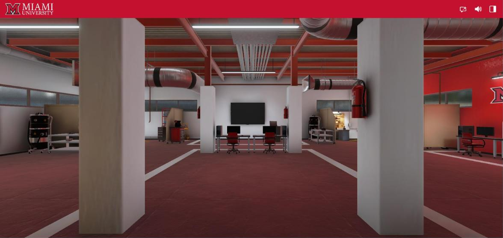
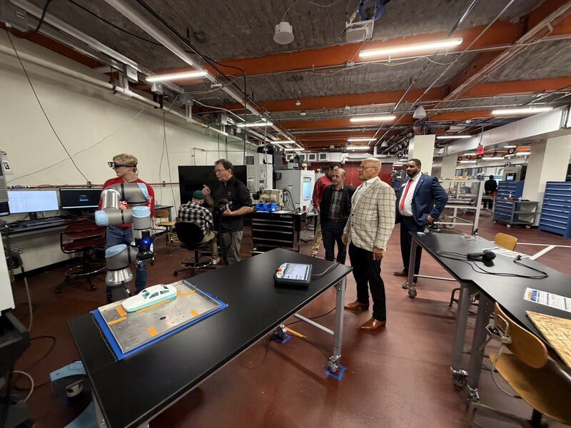
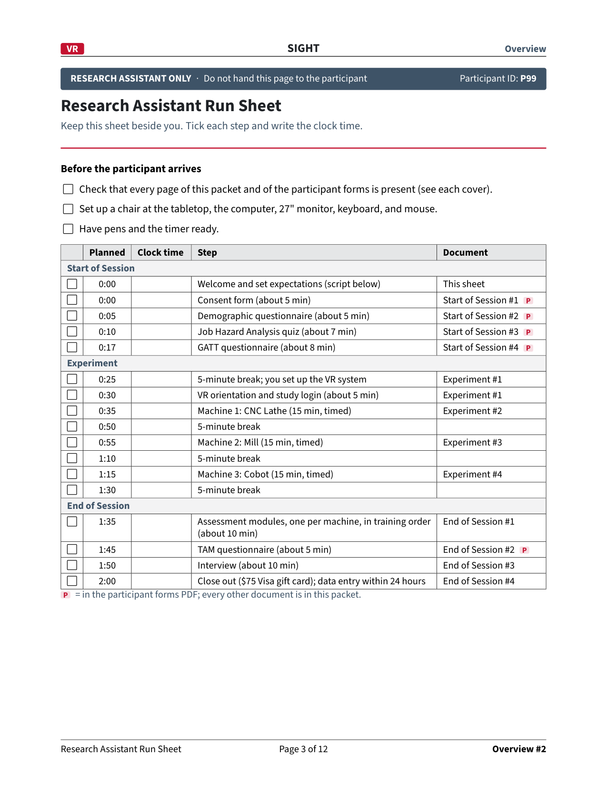
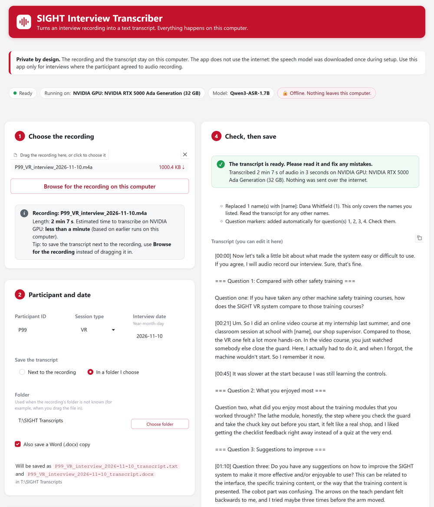

SIGHT: Safety Immersion and Gamified Hazard Training for Industry 5.0
Meeting 29: The IRB Changes, the SIGHT Test Hub, and the Road to Our First Pre-Pilot
November 13, 2026
Meeting Goals
Recap: What We Covered in Meeting 28 (Oct 30)
Administrative / BWC
- BWC approved the Q5 report and the October 22 grant meeting; the September/October documents are pending.
- Track 3 abstract (two pages) is due Nov 16, 5 PM ET.
- Everyone on the grant completes COI training and the FCOI form; new hires complete CITI first.
- Receipts go in the PCard folder when requested; emails are written in your own voice.
The experimental plan
- Participants train in VR first, then AR (the Sept 11 decision), with one participant ID across both.
- One assessment module per machine; sessions of about 2 hours; $75 per session.
- Recruit 40 so that 36 complete both sessions.
- Participation must be voluntary: never part of a course grade.
- The lab monitors (24-inch) differ from the 27-inch monitors in the IRB.
Minutes: the Meeting 28 minutes are up for approval today; the full text is in the appendix.
Action Items from Meeting 28
| Responsible Party | Action Item | Due Date | Status |
|---|---|---|---|
| Jay | Coordinate and submit the IRB amendment | Nov 6 | Revisions drafted Nov 10 (Part 3) |
| Usman / Om | CITI training; certificates to Jay | Nov 1 | |
| All team members | COI training and the FCOI form | ASAP | Checklist in Part 2 |
| Austin / Arthur | AR sign-in through Firebase; one participant ID across VR and AR | Before pre-pilots | |
| Fadel / Arthur / Lora | AR assessments; do the AR machines operate? | Before pre-pilots | No AR assessment (TAM and interview only); only the mill is non-operational; lathe and cobot run with safeguards (proposed to the IRB) |
| Jay | Monitor size: change the IRB or get monitors | With the amendment | |
| Mohammad | Reply to the ENT 252 instructor: voluntary, never graded | Nov 2 | |
| Fadel | Submit the Track 3 abstract | Nov 16 | |
| Mohammad | MaxByte items; the Makino visit | ASAP | |
| MU team | Start pre-pilot testing | By Nov 13 | First session: Fri, Nov 20 |
Administrative Updates
Fadel Megahed and Mohammad Mayyas
Status of BWC Deliverables and Requirements
- Approved by BWC: the Q5 quarterly report (D7.4) and the October 22 quarterly grant meeting (D3.4).
- Pending BWC review: the September/October meeting documents (D2.9). BWC reviews them after every team submits.
- Next: the two-page Track 3 abstract, due Monday, Nov 16, 5 PM ET.
| Deliverable | Description | Due | Status |
|---|---|---|---|
| 7.4 | Quarterly progress report, Quarter 5 | Oct 9, 2026 | Approved |
| 3.4 | Quarterly grant meeting (PI and PM attended Oct 22) | Oct 23, 2026 | Approved |
| 2.9 | September/October project team meeting documents | Nov 13, 2026 | Pending review |
| Track 3 | Two-page abstract | Nov 16, 2026, 5 PM ET | Due in 3 days |
| 2.10 | November/December project team meeting documents | Jan 15, 2027 | Scheduled |
| 7.5 | Quarterly progress report, Quarter 6 | Jan 15, 2027 | Scheduled |
Trainings: CITI to Run Sessions; COI and FCOI for the Grant
| PIs | GRAs | URAs | ||||||
|---|---|---|---|---|---|---|---|---|
| Fadel Megahed | Arthur Carvalho | Mohammad Mayyas | Jay Shan | Austin Hamilton | Michael Wise | Om Raval | Usman Asif | |
| CITI | ||||||||
| COI | ||||||||
| FCOI | ||||||||
Team Assignment: Om and Usman Work with Jay and Michael
SIGHT Test Hub admin
AR materials; backs up the lathe and cobot
AM Hub subteam
About nine years in occupational safety
The SIGHT IRB Work and Pre-Pilot Testing
Fadel Megahed, with Austin Hamilton and Michael Wise
Starting from the beginning, for anyone new to the study
What We Are Testing





Who Takes Part, and How Often
Adults (18 or older) from Miami and from Ohio manufacturers. Joining is voluntary, and anyone can stop at any time. Everyone does VR first, then AR (decided Sept 11; the reasons are in the appendix).
One VR Session, as It Happens
P99 is our made-up test participant. P99 uses machine order 3: CNC lathe → Mill → Cobot.
Left: what the participant does. Right: what the research assistant writes, as it happens. Every minute comes from the run sheet. Each step first shows the forms; the next click fills them in. Click to step through.

One AR Session, as It Happens
About one week after the VR session, P99 trains on the same three machines, in the same order, with the Magic Leap 2 headset at the real machines.
The mill's spindle stays off (circuit breaker), but P99 can still move the table and turn the handwheels. The CNC lathe runs behind its closed door; the cobot runs at reduced speed with its collision sensors, and the AR shows a zone P99 must not enter. No machine assessment in AR: the session ends with the TAM and the interview. Proposed to the IRB in the amendment. Click to step through.
- Welcomes P99 back and reminds P99 of their rights, as in Session 1
- Uses the same participant ID: P99
- Asks how P99 felt after Session 1
- Skips the demographics, JHA quiz, and GATT (Session 1 only)
- Fits the Magic Leap 2 headset and checks that P99 can see clearly
- Shows the hand gestures for each step
- Shows how the printed tags anchor each step to the machine
- Shows how to realign the overlay if it drifts
- Checks for dizziness or eye strain
- Machine 1 in P99's order 3: the CNC lathe
- The lathe runs only with its door (guard) closed
- Records the steps reached, clock times, and help requests
- Stops at 15:00, then a 5-minute break
- Machine 2: the mill
- Breaker off, so the spindle cannot run
- P99 moves the table, turns the handwheels, and handles the vise and the wax block as guided
- Records the steps reached, clock times, and help requests
- Stops at 15:00, then a 5-minute break
- Machine 3: the cobot
- The cobot runs at reduced speed; P99 stays out of the zone the AR shows
- Its collision sensors stop the arm on contact
- Records the steps reached, clock times, and help requests
- Hands over the TAM, now rating the AR system
- Reads the four interview questions word for word
- Records audio only with consent on the revised form, once the IRB approves it
- Transcribes it on the SIGHT workstation, then deletes the recording once verified
- Gives the second $75 Visa gift card
- Takes the headset back and cleans it
- Within 24 hours: scans the AR packet into P99/AR and enters it in the Hub
The AR Session: What We Will Propose to the IRB
What Changes in the Consent Form
Proposed revision, pending IRB approval. Jay submits it with the amendment.
Session length
Compensation
After the training
Reading the forms
Interview audio
Storage
Withdrawal and results
Removed and fixed
What Changes in the Protocol
Where Every Piece of Paper Goes
Consent_YYYY-MM-DD.pdf.P99_VR_packet_YYYY-MM-DD.pdf.P99/VR in the shared SIGHT Pilot Testing folder. Drive is the archive. The recording itself stays on the SIGHT workstation until the transcript is verified, then it is deleted.The SIGHT Test Hub in Five Steps
Safeguards Built Into the Hub
Interviews Are Transcribed on the SIGHT Workstation
Decided Nov 12. With consent, the RA transcribes the interview on the SIGHT workstation with a local, open-source speech model, in an app the SIGHT team built. No audio leaves the computer.

| A 10-minute interview on | Time |
|---|---|
| A computer with an NVIDIA GPU (measured) | about 11 s |
| CPU only, 4 cores (from the mock test) | about 6 min |
| A typical laptop (estimate) | 8 to 15 min |
- The Hub: live since Nov 12 with the transcript upload (no audio upload); test it with the mock interview.
- The SIGHT workstation: install the app and transcribe the mock interview during the dry run.
What Was Said vs What the App Wrote
The Road to the First Pre-Pilot
① The monitor size (27-inch in the IRB)
② Who, where, and what time on Nov 20
③ Dates for the other five pre-pilot sessions
Six pre-pilot sessions, all complete by Dec 18. Pre-pilot participants are team members, separate from the 40. No real participant is recorded until the IRB approves the revised form. Before the dry run, RAs watch the five training videos; the Hub checklist for the dry run is in the appendix.
Outreach Updates: Recruiting Through a Course, and Makino
Recruiting through a course (ENT 252)
The instructor offered to help us reach students, which we appreciate. On Oct 30 the team agreed on how this can work: the instructor may tell students about the study and the $75 per session, and joining stays voluntary and separate from any grade.Makino
Mohammad reached out to David Fox and the Makino team about a visit to present the VR modules and to explore commercialization pathways. The Miami workforce liaison leads the formal relationship.Industry Partner Collaboration
MaxByte
MaxByte: Recent Developments in the AM Hub
Ram and the MaxByte team are welcome to share their screen if they have slides on their current work in the AM Hub.
Risk Mitigation and Wrap-Up
All Project Members
Risk Mitigation and Log Updates
| Risk | Mitigation | Status |
|---|---|---|
| The IRB does not yet cover what we plan to run | Consent form and protocol revisions are drafted; Jay submits one amendment. | Open |
| Lab monitors (24-inch) differ from the IRB (27-inch) | Change the IRB in the same amendment, or get monitors. | Open |
| AI reading of participant data; interview audio | No consent forms or names in the Hub; a person confirms every field. Interviews are transcribed on the SIGHT workstation; no audio leaves it. | In progress |
| Running the lathe and the cobot in AR | Mill breaker off; lathe door closed; cobot at reduced speed, with collision sensors and the AR no-go zone; proposed in the amendment. | Open |
| New research assistants are not yet ready | Jay and Michael work with Om and Usman; training videos; the P99 dry run. | In progress |
| Students are unavailable after classes end on Dec 4 | First pre-pilot Nov 20; recruit non-student participants too. | Open |
| Recruitment pressure compromises voluntary consent | IRB-approved recruitment only; no grade depends on joining. | In progress |
| Only one person could run the AR system | Michael backs up the CNC lathe and cobot; Jay is certified on the mill. | Mitigated |
| Magic Leap 2 is discontinued | Backup headset received and tested. | Mitigated |
Upcoming BWC Deadlines
Nov 13
Track 3 abstract
Next up
First pre-pilot session
Project
Classes end; finals Dec 7 to 11
Calendar
All six pre-pilot sessions complete
Due
Nov./Dec. meeting documents (D2.10) and the Q6 report (D7.5)
Scheduled
Today’s meeting is reported to BWC with the November/December documents (D2.10), via OIA as separate files.
Contacts: Fadel Megahed (fmegahed@miamioh.edu) · Mohamed Farrag, PM (farragm2@miamioh.edu).
Action Items and Next Steps
- Nov 16, 5 PM ET: the Track 3 abstract goes to BWC.
- By Nov 18: the P99 dry run through the lab scanner and the SIGHT Test Hub.
- Arthur (follow-up): make SIGHT VR open each assessment at the assigned module (CNC Module 4, Mill Module 5, Cobot Module 2) instead of Module 1, before the first pre-pilot.
- Fri, Nov 20: the first pre-pilot session (Jay, Om, and Usman).
- Dec 18: all six pre-pilot sessions complete.
Appendix
Reference slides, not presented in the meeting
Meeting 28 Minutes (October 30, 2026)
Session Order: VR Before AR (Decided Sept 11)
The original design (Meeting 25) assigned the order at random. In the Sept 11 breakout, the team chose VR first for everyone. Two reasons, in our own words:
Machine Order Within a Session: Six Orders for 42 Participant IDs
Each participant ID gets one of six orders, so that each machine comes first for 14 of the 42 IDs. The packet prints the order on its cover.
| Order | First | Second | Third | Participant IDs | ||
|---|---|---|---|---|---|---|
| 1 | Mill | → | CNC lathe | → | Cobot | P1, P7, P13, P19, P25, P31, P37 |
| 2 | Mill | → | Cobot | → | CNC lathe | P2, P8, P14, P20, P26, P32, P38 |
| 3 | CNC lathe | → | Mill | → | Cobot | P3, P9, P15, P21, P27, P33, P39 |
| 4 | CNC lathe | → | Cobot | → | Mill | P4, P10, P16, P22, P28, P34, P40 |
| 5 | Cobot | → | Mill | → | CNC lathe | P5, P11, P17, P23, P29, P35, P41 |
| 6 | Cobot | → | CNC lathe | → | Mill | P6, P12, P18, P24, P30, P36, P42 |
VR Session: Participant Forms (Blank, 10 Pages)
What the participant fills in, blank: 10 pages. Scroll and zoom.
VR Session: Research Assistant Packet (Blank, 12 Pages)
What the research assistant fills in, blank: 12 pages. Scroll and zoom. The study password is removed from this copy.
AR Session: Research Assistant Packet (Blank, 11 Pages)
What the research assistant fills in at the real machines: 11 pages, with the machine checks, one observation sheet per machine, and the interview. The participant fills in only a cover and the TAM (2 pages). No machine assessment in AR.
Consent Form: Proposed Revision for the IRB Amendment (Draft)
SIGHT Interview Transcriber: Recorded Run on the Mock P99 Interview
Training Videos for Research Assistants
P99 Dry Run: Hub Functions to Test Before November 20
One made-up session (P99) through the lab scanner and the live Hub, by Nov 18. What should the Hub do?
| Function | On the paper | The Hub should |
|---|---|---|
| Blank-item warning | Leave 5 GATT items blank | Warn about many blanks before the RA confirms |
| Unsure answers | Circle two numbers on one TAM item | Mark the item unsure and show it first |
| Corrections | Cross out an answer and write a new one | Read the new answer |
| Names | Write a full name in the observation notes | Write [name]; the RA blacks it out on the image |
| Clock times | Write 2:05, 14:05, and 2.05 pm | Read all three as times |
| Page order | Shuffle pages and scan one upside down | Identify every page and turn it upright |
| Consent pages | Put a fake consent form in the scan | Drop it in the browser; never upload it |
| Interview transcript | Record a mock interview with a made-up name; transcribe it with the app | Accept the .txt, fill the four answers from its markers, keep [name] |
Review Questions on the Protocol Changes
Answer out loud, then click a card to check.

Project funded by the Ohio BWC through their Worker Safety Innovation Center